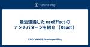
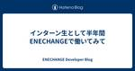
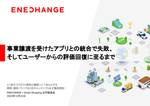

ENECHANGE Developer Blog
https://tech.enechange.co.jp/
ENECHANGE開発者ブログ
フィード

最近遭遇した useEffect のアンチパターンを紹介 【React】
ENECHANGE Developer Blog
ENECHANGEの Yuto Ono です。エンジニアリングマネージャーをしながら、フロントエンドの開発もしています。 React を使った開発で悩むポイントの1つとしては、 useEffect の使い方だと思います。何でもできる魔法のようなフックですが、それゆえに、間違った使い方をされることも多い印象です。そこで今回は、最近遭遇した useEffect のアンチーパターンと、それの対処法を紹介していこうと思います。 こちらの公式ドキュメントに、さらに詳しく書いてありますので、詳しく知りたい方はこちらをご参照ください。 ja.react.dev
4日前

インターン生として半年間ENECHANGEで働いてみて 1
1
ENECHANGE Developer Blog
はじめに 初めまして！ 2024年2月からWebエンジニアとしてENECHANGEの就業型インターンに参加している植月です。 現在は大学院修士2年生で計量経済学系の研究室に所属しており、普段は主に一人、チーム問わずWeb開発をしています。 約半年間、インターン生としてENECHANGEで働くことで学んだことや感じたことを書いていこうと思います。
7日前

事業譲渡を受けたアプリとの統合で失敗、 そしてユーザーからの評価回復に至るまで 18
ENECHANGE Developer Blog
こんにちは、EV充電サービス事業部でFlutterエンジニアをしている小林です。 2023年12月に弊社とSmart Shopping様と共同で「IoT系のプロダクト開発の裏側」というテーマのオフライン勉強会を開催いたしました。その中で「事業譲渡を受けたアプリとの統合で失敗、 そしてユーザーからの評価回復に至るまで」というタイトルで発表した内容を、改めてブログ記事としてまとめます。また、その後日談についても触れようと思います。 enechange-meetup.connpass.com
7日前
AIレビューツールであるCodeRabbitを試してみました【設定ファイルあり】
ENECHANGE Developer Blog
こんにちは、ENECHANGEの園木です。 弊社ではI/O Day という制度を試験的にに実施しています。 I/O Dayとは、エンジニアが通常業務の時間を使って技術的なインプット・アウトプットすることができる制度となっております。 今回はその制度を使い、AIレビューツールであるCodeRabbitを試してみました。 設定ファイルも用意していますので、興味がある方はぜひ目を通してみてください。
13日前

メリットだらけなので、AWSパートナーになりました
ENECHANGE Developer Blog
VPoTの岩本 (iwamot) です。 ENECHANGEは、2024年3月にAWSパートナーになりました。パートナーパスとして「ソフトウェアパス」を選択しており、将来的にファンデーショナルテクニカルレビュー (FTR) の通過を目指します。 aws.amazon.com 今回は、ENECHANGEがAWSパートナーになった意図をかいつまんでご紹介します。
15日前
Rails + Hotwire を試してみて、使いどころを考えてみた
ENECHANGE Developer Blog
ENECHANGEの Yuto Ono です。 最近はエンジニアリングマネージャーに任命され、引き続き手を動かして開発しながら、メンバーの育成などにも取り組むようになり、マネジメントの面白さと難しさを実感しています。 今回は、前から気になっていた Rails + Hotwire という技術スタックを触ってみたので、それについて書いていきたいと思います。私はフロントエンドが得意分野なのですが、Railsもそれなりに触っているので、Railsでのフロントエンド技術をキャッチアップするのに自分が適任だと思いました（私のフロントエンドの実績は、以前 what we use に寄稿させていただいた記事を…
21日前
100以上のLLMが使えるSlackbot OSS、Collmboを公開しました
ENECHANGE Developer Blog
VPoTの岩本 (iwamot) です。 100以上のLLMが使えるSlackbot OSS、Collmboを公開したのでご紹介します。 github.com 要点： ENECHANGEではChatGPT-in-Slackを便利に使ってきた ChatGPT-in-SlackでチャットできるLLMはGPTのみ 他のLLMも使えるよう、forkしてLiteLLMを組み込んだ
22日前
JaSST'24 Tohokuに参加してきました！〜テスト技法編〜
ENECHANGE Developer Blog
はじめに JaSST Tohokuについて 参加目的 セッションについて 10:30-12:00 (90分) 説明できるテストをつくるためにできることを考える 13:50-15:10 (80分) 同値分割法と境界値分析 15:20-17:10 (110分) クラシフィケーションツリー技法 スポンサーライトニングワークスについて 終わりに はじめに ENECHANGEの工藤です。フルリモートで体が鈍ったので 朝活で筋トレを始めたところ、胃の調子がだんだんと良くなってきています。 QAと同じで胃も意識すれば品質を上げられると信じております。 早速ですが2024年5月31日に仙台で開催されたJaSS…
1ヶ月前
RubyKaigi 2024 に参加してきました！
ENECHANGE Developer Blog
ENECHANGEの園木です。 今年も ENECHANGE は2024年5月15日〜5月17日に開催された「RubyKaigi 2024」に、ゴールドスポンサーとして協賛しました！ そして私園木は RubyKaigi 2024 に会社代表として参加してきました！ 本記事では、一部のセッションの内容やRuby会議の様子をお届けします。
1ヶ月前
MySQLパフォーマンス向上のためのプロビジョニングIOPSの活用とその結果
ENECHANGE Developer Blog
概要 最近、最新のアクションカメラを購入してYoutube用に動画編集してるCTO室のKazです 今回、MySQLのマイグレーション時、Index有効クエリを高速化するため、ボトルネックを特定してそれを解消しました。 結果 Index有効化において 適切なメモリ量を確保し、MySQL Workbenchのパフォーマンスレポートを確認することで、システムのボトルネックを特定しました。その結果、プロビジョニングIOPSを利用することにより、特に時間を要していたテーブルのインデックス有効化の時間を大幅に短縮し、システム全体の効率化を図ることができました。
1ヶ月前
Amazon AppFlowをGA4に接続し、人気記事ランキングをSlackに自動投稿する
ENECHANGE Developer Blog
こんにちは、ENECHANGE株式会社でVPoTを務めている岩本 (iwamot) です。 このブログの人気記事ランキングをSlackに自動投稿するよう実装したので、事例としてご紹介します。Google Analytics 4 (GA4) のレポートを見に行かなくても、どんな記事が読まれているのか手軽に確認できて便利です。 実装方法はいろいろ考えられますが、今回選んだのは下記でした。 Amazon AppFlowを使い、GA4データをAmazon S3に保存 保存をトリガーにAWS Lambda関数を呼び出し、データを加工してSlackに投稿 以下、AppFlowを中心に詳しくご説明します。
1ヶ月前
カスタマーサービスセンターの新拠点のネットワーク調査
ENECHANGE Developer Blog
Wi−Fiネットワーク調査報告 カスタマーサービスセンターの新拠点におけるネットワークを調査し、スケジュール遅滞なく業務を開始できることを目的としました。新拠点では既存の通信速度と安定性を担保する必要があり、特にインターネット接続とAWSに構築しているVerified Accessの品質を確認しました。これにより、現行のネットワーク基準を満たし、業務のスムーズな移行と運用が可能であることを確認しました。
1ヶ月前
音声認識モデルの精度を検証
ENECHANGE Developer Blog
こんにちは、2023年7月からコツコツ集めて現在72WLD所有しているCTO室のkazです。 OpenAI Whisperを試してみた OpenAIが開発した音声認識モデルWhisperを使用して、実際の音声データをテキストに変換してみました。その結果、非常に高い精度で音声を文字起こしできることが確認できました。 具体的には、Google ColaboratoryでGoogleドライブをマウントし、マウントしたディレクトリにある音声データをWhisperを使用してテキストデータに変換します。生成されたテキストデータをChatGPTで要約し、議事録を作成します。
2ヶ月前
Slackのfiles.upload API廃止に備え、Google Apps Scriptのコードに手を入れる
ENECHANGE Developer Blog
ENECHANGE VPoTの岩本 (iwamot) です。 2024年4月～6月の四半期から、社内I/O Dayを試験的に始めています。「プロダクト開発や事業課題の解決に活用できそうな技術について、集中的にインプット／アウトプットする日を宣言する制度」のことです（くわしくは別の機会にお伝えします）。 多くのエンジニアが本日5月15日にI/O Dayを宣言していたので、ぼくも乗っかってみました。お祭り感があって、いいですね。 ぼくが取り組んだテーマは、Slackのfiles.upload API廃止対応でした。2025年3月までに、新しいAPIに移行する必要があるんですよね。まだ時間はあるもの…
2ヶ月前
Easy-RSAで作成したサーバ・クライアント証明書をAWSで利用する
ENECHANGE Developer Blog
CTO室のkazです。ゴールデンウィーク後、一週間の入院生活中にベッドの上でこれを書いています。 目的 Easy-RSAで作成したサーバ証明書をAWSClientVPNの相互認証用クライアントVPNエンドポイントで使用します。クライアントVPNエンドポイントの作成についてはこちらを参照ください。 概要 通常、AWSCertificateManager(ACM)を利用すれば、DNS認証によるサーバ証明書の自動更新が適用され、定期的な更新作業が不要となります。しかしながら、ACMは公開SSL/TLS証明書の管理に特化しており、クライアント証明書の生成機能は提供されていません。したがって、相互認証用…
2ヶ月前
オールチームで進めよう！ 〜AWS Transit Gatewayによるコスト削減事例〜
ENECHANGE Developer Blog
ENECHANGE所属のエンジニア id:tetsushi_fukabori こと深堀です。 この記事を書いている2024/04/26（金）はドル円の為替が一時156.7円まで上昇したと思ったら155円まで下ってまた156.2円位にはねたりと乱高下を繰り返しています。 今回の記事にも関係しますがAWSのコストを見るような部門には胃が痛い日々が続きますね。 見ないほうが精神衛生上よろしいのでしょうが、仕事ではそうもいかないのが辛いところです。 今回は2024年第1Q（弊社は12月決算なので1-3月が第1Qです）に実施したdev環境のインフラ構成変更と、それによるコスト削減を紹介します。 AWSで…
2ヶ月前
事業を支えるSREのノウハウを共有！ ENECHANGE主催イベント・レポート
ENECHANGE Developer Blog
2023年12月6日にENECHANGE株式会社の主催にて「耐障害性向上・パフォーマンス改善・負荷軽減を実現する？事業を支えるSREのノウハウを共有」というテーマでのエンジニア向けイベントをオンライン開催しました。テックベンチャーであるアソビュー株式会社（以下、アソビュー）・Chatwork株式会社（以下Chatwork）・ENECHANGE株式会社（以下ENECHANGE）のSREエンジニアが登壇し、事業特性に合わせてシステムを安定稼働させながら成長を支えていく各社の取り組みについてお話ししていただきました。本記事ではイベントでの各登壇者のお話をサマライズ版でお届けします。
2ヶ月前
Team Blog HubをVercelからCloudflare Pagesに移行しました
ENECHANGE Developer Blog
VPoTの岩本 (iwamot) です。 ENECHANGEでは、所属エンジニアの個人的なアウトプットをまとめたハブサイト「ENECHANGE Engineers' Articles」を運用しています。 engineer.enechange.co.jp このハブサイトは、OSSのTeam Blog Hubで構築したものです。これを使うと、メンバーのアウトプットが簡単にまとめられます。 先日、ハブサイトのデプロイ先をVercelからCloudflare Pagesに移行しました。 この記事では、なぜ移行しようと思ったのか、また、どのように移行したのか書いてみます。
3ヶ月前
AWS Chatbotの現行仕様に耐えつつ、EC2インスタンスの状態をSlackで一覧表示する
ENECHANGE Developer Blog
VPoTの岩本 (iwamot) です。プレイングマネージャーとして、ENECHANGEの各種システムで使っているAWSの運用も担当しています。 先日、アプリチームの同僚から「複数のEC2インスタンスの状態をSlackで確認したい」と相談を受けました。くわしくは後で述べますが、停止中の開発サーバをぱっと探せるようにしたいとの要望です。 AWS Chatbotを使えば簡単だろうと軽く引き受けたものの、現状のAWS Chatbotにはいくつかの制約があり、ちょっと手こずりました。 今回の記事では、AWS Chatbotに現状どのような制約があり、どう対処したのか書いてみます。
3ヶ月前
動的Webページの新着情報をどうSlackに通知するか
ENECHANGE Developer Blog
VPoTの岩本 (iwamot) です。 先日、コーポレート部門の同僚から「弊社Webページの新着情報をSlackに通知したい」と相談を受けました。こういう相談を受けるのも、ぼくの業務のひとつです。腕の見せどころで、やる気が高まります。 見てみると、そのページはクライアントサイドで外部APIを呼び出し、取得した新着情報を動的に表示していました。RSSやAtomフィードは提供されていません。外部APIの詳細も不明です。 今回の記事では、この相談にどう考えて対応したか書いてみます。正解はないと思うので「自分ならこうする」目線でお読みいただければ幸いです。
3ヶ月前
Docker Build Cloudを本番CI/CDパイプラインに導入・検証してみた
ENECHANGE Developer Blog
ENECHANGE所属のエンジニア id:tetsushi_fukabori こと深堀です。 最近、愛犬のバーニーズマウンテンドッグが当たり前のように飼い主のベッドに乗って寝るようになりました。 飼い主の体の位置など何も気にしないので踏み潰されて起きることもしばしばです。 いつか痛い目を見ると思います（飼い主が）。 今回は2024年2月にオープンされたDocker Build Cloudを触ってみました。 www.docker.com 弊社ではコンテナで稼働するアプリケーションが増えてきており、コンテナイメージのビルドにはCodeBuildを使用しています。 CodeBuildと比較してのメリ…
3ヶ月前
AWS AppConfigが活用できそうか試してみました
ENECHANGE Developer Blog
VPoTの岩本 (iwamot) と申します。このブログを含め、AWSについてのアウトプットが好きで続けていたら、先日 AWS Community Builder (Cloud Operation) に選んでいただけました。これを励みに、さらにアウトプットしていきます。 ところで、SRE Magazineという、株式会社MIXIの井上さんが発刊準備を進められているWeb雑誌があり、ぼくも寄稿できないかネタを考えていたところ「非常時の可用性をフィーチャーフラグで保つアイディア」が思いつきました。 アイディアの詳細は発刊をお待ちいただくとして（追記：発刊されました！）、AWSでフィーチャーフラグと…
3ヶ月前
JAWS DAYS 2024に参加して楽しかった5つのこと
ENECHANGE Developer Blog
VPoTの岩本 (iwamot) です。 2024-03-02に、AWSのユーザーコミュニティによる大規模イベント、JAWS DAYS 2024が開催されました。 jawsdays2024.jaws-ug.jp ENECHANGEは企業サポーターとして、ぼく自身も個人サポーターとして、このイベントに参加しました。 9時の入場から19時半の退場まで、すべてのことが楽しかったのですが、なかでも楽しかった5つのことを、思い出しながらまとめてみます。
4ヶ月前
AWSマネジメントコンソールのmyApplicationsダッシュボード、こんなふうに作りました
ENECHANGE Developer Blog
VPoTの岩本 (iwamot) です。 2023年11月に、AWSマネジメントコンソールの新機能「myApplications」が発表されました。アプリケーションのコスト、パフォーマンス、セキュリティといった情報を、ひとつのダッシュボードで見られる機能です。 aws.amazon.com 便利そうなので、ENECHANGEでもダッシュボードを作り、事業部のエンジニアに見てもらっています。 今回の記事では、どんなふうにダッシュボードを作ったのかをご紹介します。どなたかの参考になれば幸いです。
4ヶ月前
「AWSコスト削減 天下一武道会」で心を動かされ、コストのSlack通知を始めました
ENECHANGE Developer Blog
ENECHANGE VPoTの岩本 (iwamot) です。 2024年2月1日に「第1回 AWSコスト削減 天下一武道会」が開催されました。AWSコスト削減の達人たちが、手法や成果を発表するイベントです。3000人を超える参加者数から、コスト削減への関心の高さがうかがえます。 no1.connpass.com 達人たちの発表を聞いているなかで、ぼくがすぐに真似したくなったのは「コストのSlack通知」でした。NTTドコモ・小澤さんの発表で取り上げられていた手法です。 さっそく実装を進め、本日2月5日、通知開始を社内に案内しました。通知先チャンネルには、すでに10名が参加しています。ありがたい…
5ヶ月前
テックカンパニーとしての中期目標を策定しました
ENECHANGE Developer Blog
ENECHANGE株式会社VPoTの岩本 (iwamot) です。2023年10月にVPoTを引き継いでから、4ヶ月ほどになりました。 ENECHANGEではVPoTに対し、所属エンジニアに目指すべき未来を示してリードする役割が期待されています。 その第一歩として、まずは、2027年までに達成したい、テックカンパニーとしての中期目標を策定しました。 今回の記事では、その中期目標について記してみます。
5ヶ月前
PyCon APAC 2023 に参加してきました！
ENECHANGE Developer Blog
ENECHANGEの白坂です。 ENECHANGE は PyCon APAC 2023に今回もシルバースポンサーとして協賛しました！ 今回PyCon APAC 2023にオフラインで参加してきたので、会場の様子や参加して学んだことをレポートします。
6ヶ月前
さらに進化した！AWS FargateでのECSタスク起動を速くするSeekable OCI導入レポート
ENECHANGE Developer Blog
2023年7月、AWS FargateでSeekable OCI (SOCI) を使ったコンテナ起動の高速化が可能になりました。 aws.amazon.com ただ、発表当時は下記の制約があったため、ENECHANGEには合わないと判断して評価を見送りました。 X86_64のECSタスクでしか使えない ENECHANGEではARM64の利用を優先している タスク定義に含まれるすべてのイメージのインデックス作成が必要 ENECHANGEでは大小さまざまなイメージを使っている。SOCIは250MiBより大きいイメージでの利用が推奨されている しかし2023年8月、ARM64のタスクでもSOCIが使…
7ヶ月前
ChatGPT APIで自社サービスの口コミを分析したら業務効率爆上がりだけじゃなくみんなハッピーになった話
ENECHANGE Developer Blog
概要 ENECHANGEが提供するアプリ『EV充電エネチェンジ』には、ユーザーが充電器の口コミを書き込めるコメント機能が組み込まれています。 このコメント機能を快適にご利用いただき、また自社サービスの改善に活かすためには、数多くの口コミを読み解く必要があります。増え続けるコメントをどう管理するか、という課題をトリガーとしてChatGPT API(最終的にはAzure OpenAI API)を使った支援システムを開発したことで、業務の効率化と即時性の向上、活用範囲の拡大が実現されました。 この具体的な開発プロセスや成果、困難だった点、そして今後の展望についてご説明します。 DALL・E3さんが描…
8ヶ月前
アプリケーションの通信エラーをパケットキャプチャで調査する - キャプチャしたパケットの解析 -
ENECHANGE Developer Blog
ENECHANGE所属のエンジニア id:tetsushi_fukabori こと深堀です。 執筆時点で暦の上ではとっくに秋ですが厳しすぎる残暑が続いています。 それでもようやっと愛犬の夜の散歩では涼しさも感じられるようになってきました。 同僚の id:iwamot さんが作成したChatGPT Bot作の夜に散歩するバーニーズマウンテンドッグ画像を貼っておきます。ご査収ください。 AIの生成した夜に散歩するバーニーズマウンテンドッグ（足とか背景がやや怪しい） ChatGPT Botによる画像生成はこちらの記事で紹介されています。 tech.enechange.co.jp 前回に引き続き弊社ア…
9ヶ月前